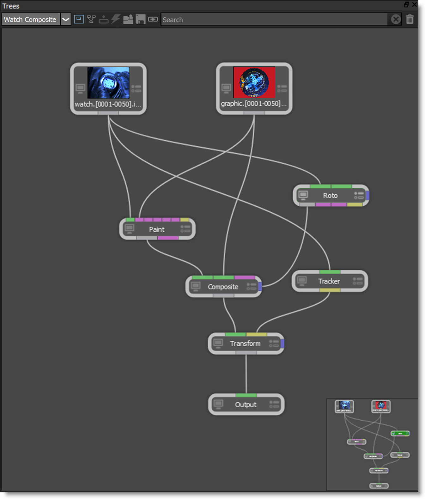

Trees and Nodes
Trees
The power of Silhouette lies in the Trees window where your effects are built. A tree is a series of clips and nodes, such as color correction, image processing and composite nodes, plugged together to create the desired effect. The tree is grown by adding clips and nodes in any order. The ability to view any node while editing another allows for very complex composites that can be set up and rendered in one pass.
Nodes
Silhouette is a node based system and different nodes are used for various functions. Located in the Nodes tab at the bottom of the screen, nodes are grouped into various categories.
Trees and Nodes Features
• 154 different nodes organized into Color, Composite, Diffusion, Filter, Film Lab, Image, Key, Light, Silhouette, Special Effects, Time, Tints, Transform, Utility, Warp and OFX groups
• Horizontal and vertical node layouts
• Gestural node workflow
• Visual presets for most nodes
• Node grouping, coloring and re-routing
• OFX third party plug-in compatible with Boris FX Sapphire, Neat Video and RE:Vision Effects products